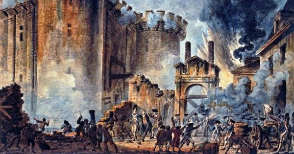
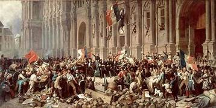
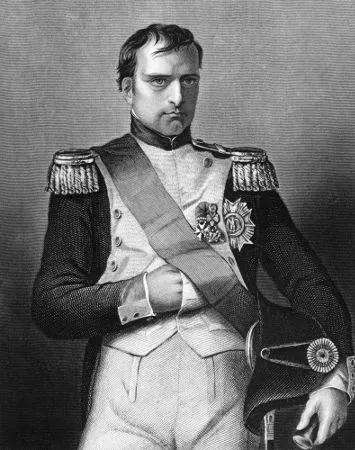
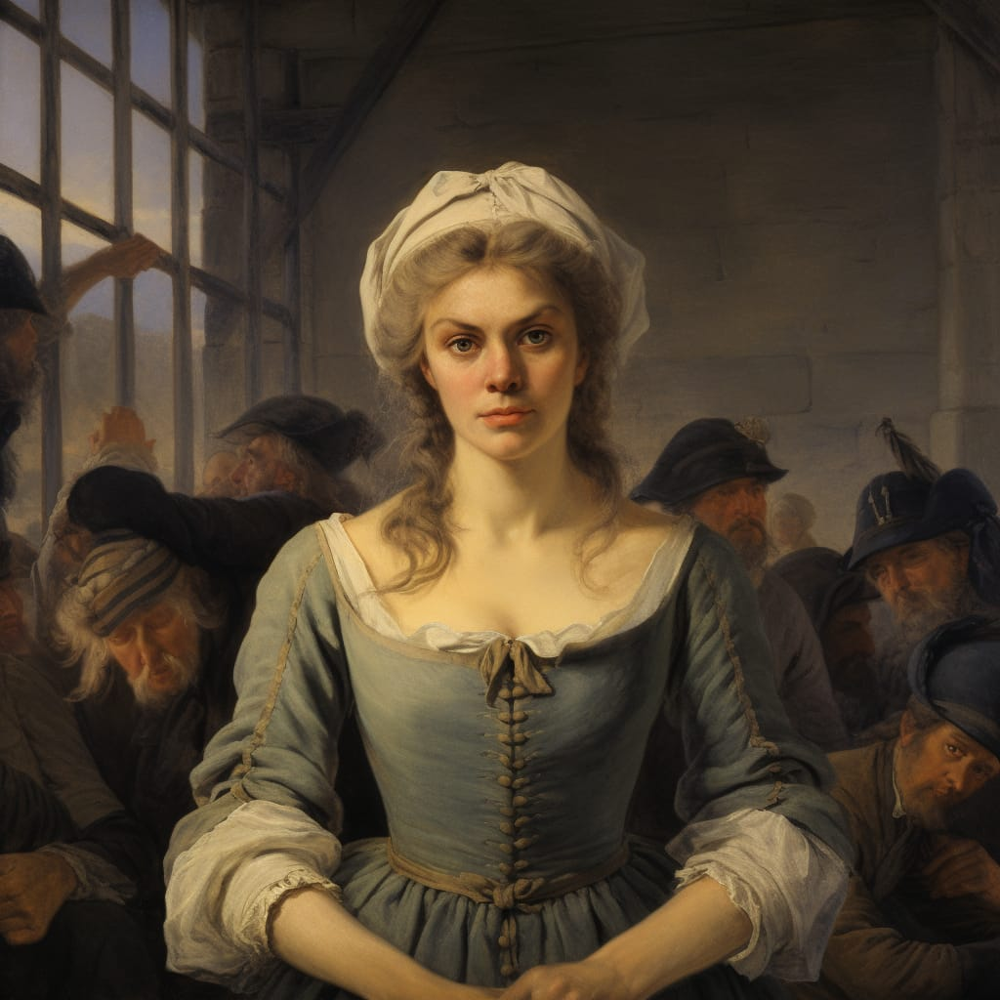
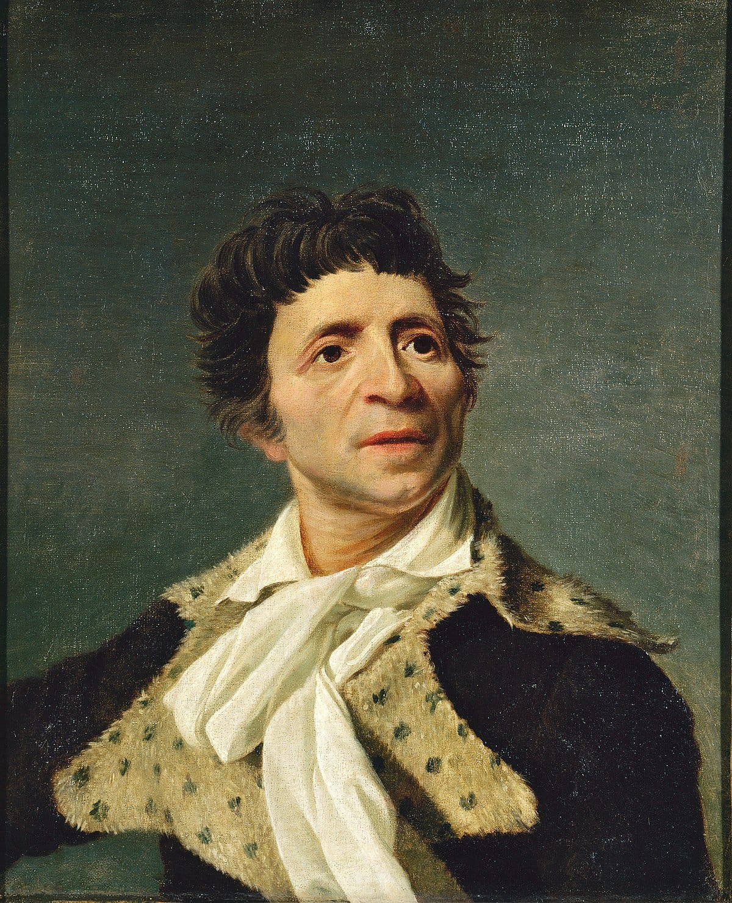
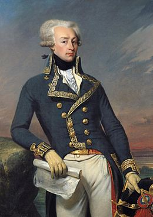
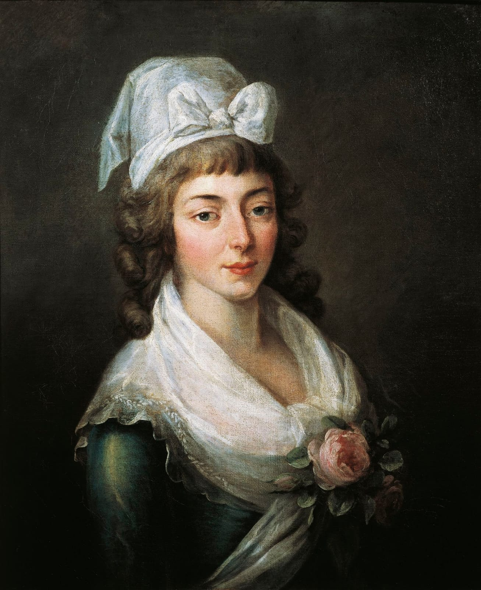
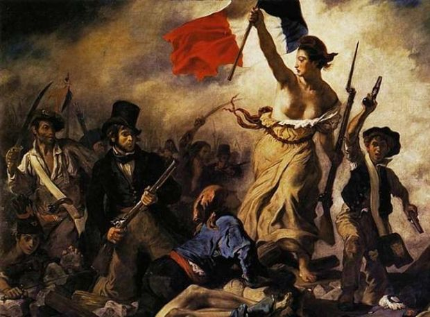
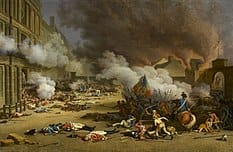
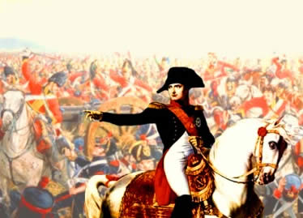

Revolução Francesa
Introdução
A Revolução Francesa, ocorrida entre 1789 e 1799, foi um marco histórico que abalou as estruturas sociais, políticas e econômicas da França. Esse movimento revolucionário, impulsionado por uma crescente insatisfação popular devido à desigualdade e à opressão, resultou em mudanças profundas no país e influenciou eventos políticos em todo o mundo. A Revolução Francesa também é conhecida por seus princípios fundamentais de liberdade, igualdade e fraternidade, que ecoaram em todo o mundo, inspirando movimentos de emancipação e democracia. Durante esse período, surgiram instituições e ideias políticas que moldaram o curso da história moderna, desde a Declaração dos Direitos do Homem e do Cidadão até a abolição do Ancien Régime e a ascensão de líderes como Napoleão Bonaparte. Neste contexto, exploraremos os eventos que marcaram essa revolução e o impacto duradouro que ela deixou nas sociedades e na política global.
Contexto Histórico
Antecedentes: Antes da Revolução Francesa, a França estava sob o domínio de uma monarquia absolutista, com o rei Luís XVI no poder. O país estava enfrentando sérios problemas financeiros devido a guerras caras, ineficiência administrativa e altos impostos. Além disso, a sociedade francesa estava dividida em classes estritamente definidas, com privilégios para a nobreza e o clero.Dentro da estrutura do Estado Absolutista, havia três diferentes estados nos quais a população se enquadrava:
- Primeiro Estado: era representado pelos bispos do Alto Clero;
- Segundo Estado: tinha como representantes a nobreza, ou a aristocracia francesa – que desempenhava funções militares (nobreza de espada) ou funções jurídicas (nobreza de toga);
- Terceiro Estado: por sua vez, era representado pela burguesia, que se dividia entre membros do Baixo Clero, comerciantes, banqueiros, empresários, os sans-cullotes (“sem calções”), trabalhadores urbanos e os camponeses, totalizando cerca de 97% da população.
Causas e fases da Revolução Francesa
Causas da Revolução Francesa
No fim da década de 1780, a burguesia, os trabalhadores urbanos e os camponeses começaram a exigir uma resposta do rei e da Corte à crise que os afetava, bem como passaram a reivindicar direitos mais amplos e maior representação dentro da estrutura política francesa. Em julho de 1788, houve a convocação dos Estados Gerais, isto é, uma reunião para deliberação sobre assuntos relacionados à situação política da França. Nessa convocação, o conflito entre os interesses do Terceiro Estado e os da nobreza e do Alto Clero, que apoiavam o rei, se acirraram. O rei então estabeleceu a Assembleia dos Estados Gerais em 5 de maio de 1789, com o objetivo de decidir pelo voto os rumos do país. Entretanto, os votos eram por representação de Estado. Sendo assim, sempre o resultado seria dois votos contra um, ou seja: Primeiro e Segundo Estados contra o Terceiro. Fato que despertou a indignação de burgueses e trabalhadores. A burguesia, que liderava o Terceiro Estado, propôs em 10 de junho uma Assembleia Nacional, isto é, uma assembleia para se formular uma nova Constituição para a França. Essa proposta não obteve resposta por parte do rei, da nobreza e do Alto Clero. Em 17 de junho, burgueses, trabalhadores e demais membros do Terceiro Estado se declararam em reunião para formulação de uma Constituição, mesmo sem a resposta do Primeiro e do Segundo Estados. Ao mesmo tempo, começava um levante popular em Paris e outro entre os camponeses. A Revolução se iniciou.
Fases da Revolução Francesa
Principais fases da Revolução Francesa são:
- Fase da Convocação dos Estados Gerais (1789)
- Fase da Assembleia Nacional Constituinte (1789-1791)
- Fase da Convenção Nacional (1792-1795)
- Fase do Diretório (1795-1799)
- Período Napoleônico (1799-1815)
Personagens importantes na Revolução Francesa
- Napoleão Bonaparte 
- Olympe de Gouges 
- Jean-Paul Marat 
- Gilbert Du Motier 
- Manon Roland 
Consequências
Consequências Políticas:
Fim da Monarquia Absolutista:
•Derrubada do regime monárquico absolutista, estabelecendo uma república.
Estabelecimento da Primeira República Francesa:
•Criação de uma república que representava a vontade popular e enfatizava a igualdade e a participação dos cidadãos nas decisões políticas.
Desenvolvimento de uma Nova Ordem Política:
•Implementação de novas estruturas políticas, como a Convenção Nacional e o Diretório, buscando estabilidade após o caos revolucionário.
Centralização do Poder:
•Tentativas de centralizar o poder e criar uma administração pública mais eficiente e controlada pelo Estado.
Guerras Napoleônicas:
•As guerras resultantes da Revolução levaram à ascensão de Napoleão Bonaparte e ao estabelecimento de um império que espalhou os ideais revolucionários pela Europa.
Consequências Sociais:
Abolição do Ancien Régime:
•Fim dos privilégios aristocráticos e do sistema feudal, promovendo uma sociedade mais igualitária.
Igualdade e Liberdade:
•A Revolução defendeu a igualdade de direitos e liberdades para todos os cidadãos, independentemente de sua origem social.
Educação e Cultura Acessíveis:
•Promoção da educação pública e da cultura, visando torná-las mais acessíveis a todas as classes sociais.
Declaração dos Direitos do Homem e do Cidadão:
•Proclamação dos direitos fundamentais dos cidadãos, servindo como base para futuras lutas por direitos civis e humanos.
Ascensão da Classe Média:
•O enfraquecimento da aristocracia permitiu o crescimento da classe média, que ganhou mais influência política e social.
Secularização e Laicização:
•Redução da influência da Igreja Católica, separando-a do Estado e promovendo uma sociedade mais secular.